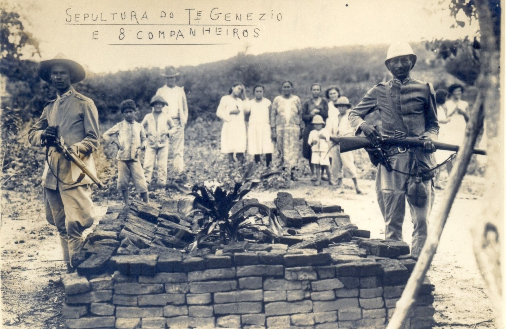
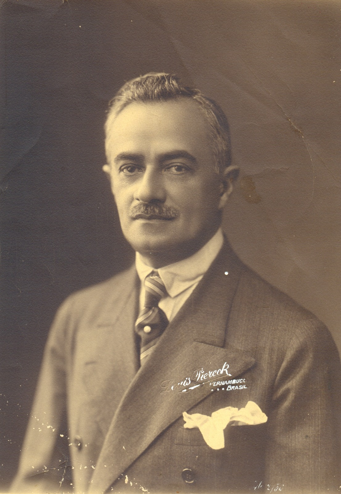
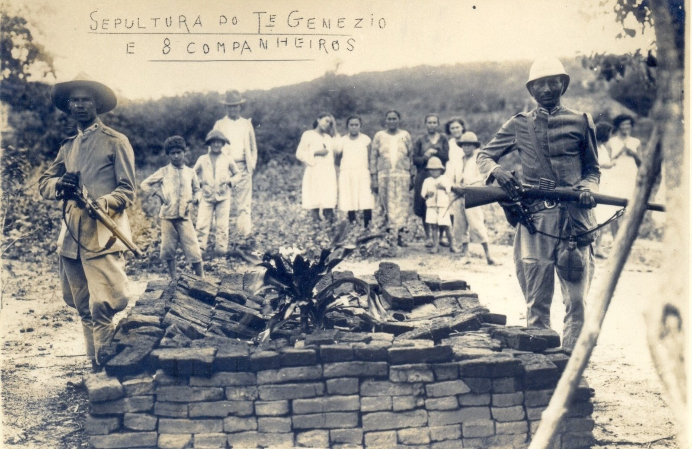
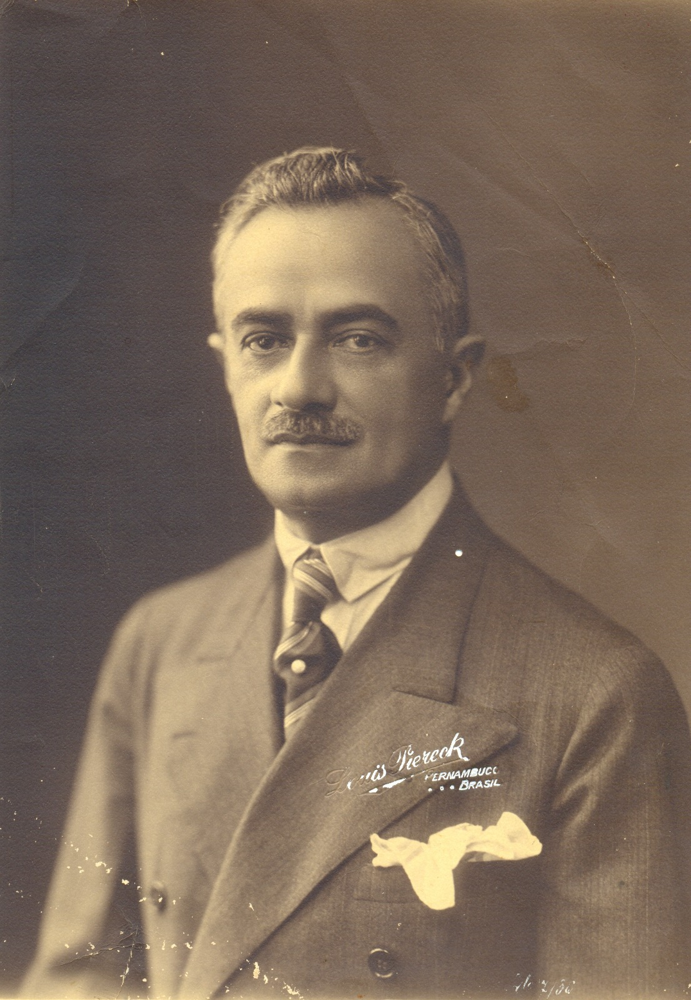
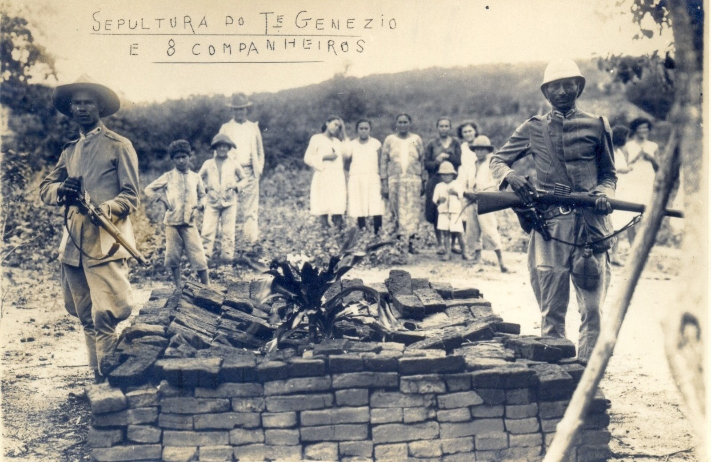
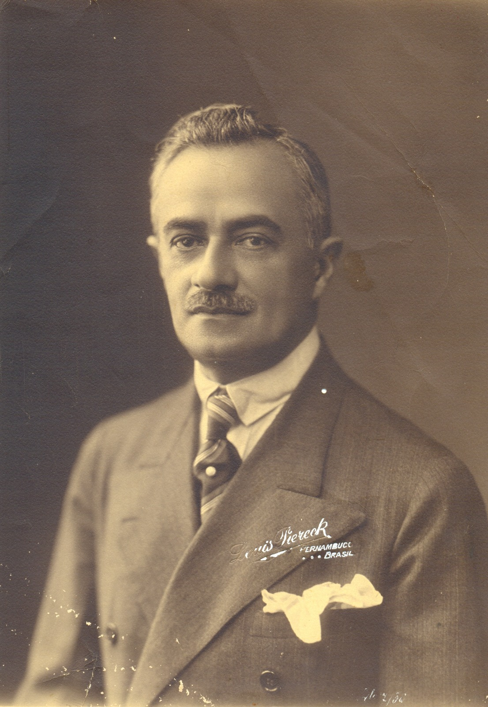
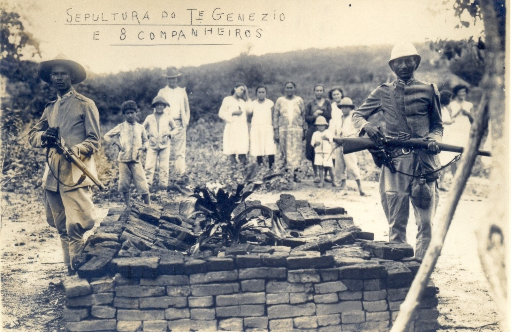
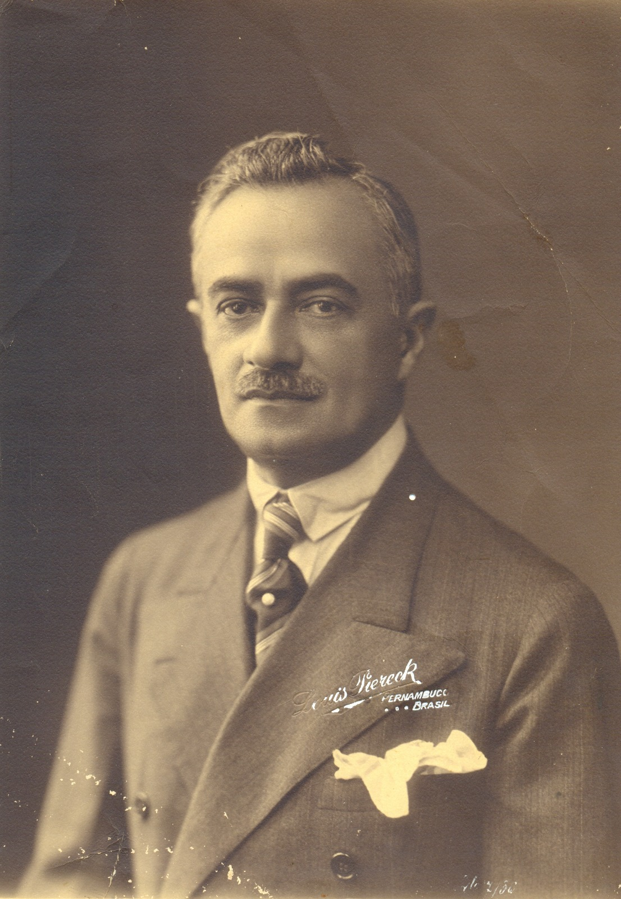

Disponibilização de acervos documentais impressos e digitais sobre o período de 1930.
Livros relacionados à década de 1930.
Revistas e matérias jornalísticas sobre a década de 1930.
Informações sobre a década de 1930 através de dissertações e teses.
Documentos textuais sobre a trajetória de José Américo de Almeida no ano de 1930.
Entrevistas de personagens e pesquisadores da década de 1930.
Registros visuais sobre eventos sucedidos no descênio de 1930.
Gravações sobre os acontecimentos históricos ocorridos na década de 1930.
Registros audiovisuais sobre a década de 1930.
Documentos relativos ao Coronel José Pereira Lima e a "Revolta de Princesa"
ESTA SEÇÃO ENCONTRA-SE INDISPONÍVEL NO MOMENTO.
Quer colaborar com a plataforma? Faça login para aproveitar novas funcionalidades como o envio de arquivos. Caso queira ajudar ainda mais, preencha o nosso formulário!
Acesse o formulário aqui